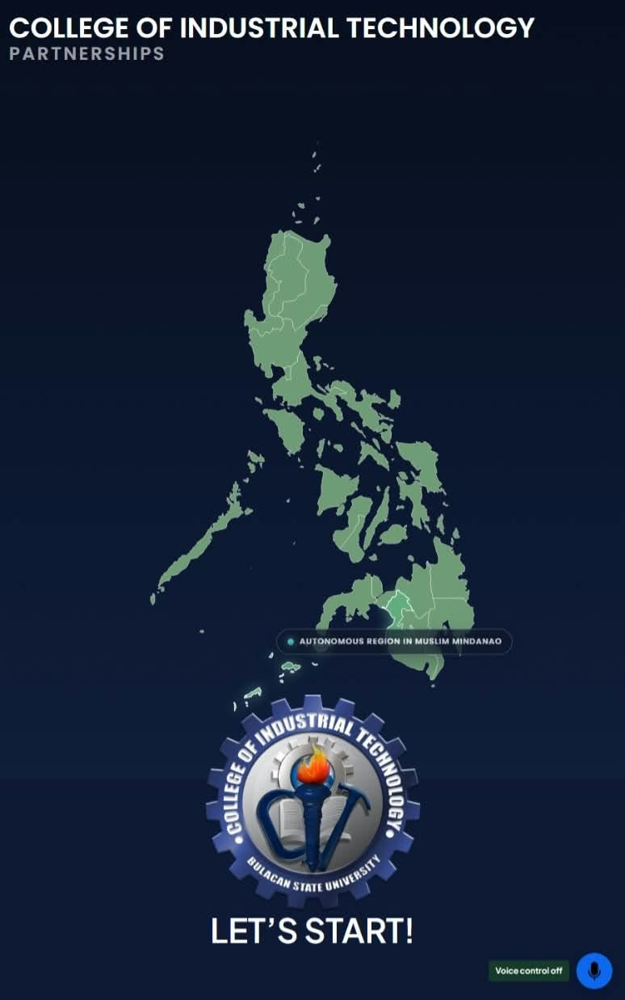

Web Development
Building and styling basic, responsive web pages.
BIT COMPUTER TECHNOLOGY STUDENT
Hello, I'm
I enjoy exploring technology, troubleshooting computer problems, and finding practical solutions. I am eager to apply what I have learned, gain hands-on experience, and grow as an IT professional.
01 / ABOUT ME
Hi! I'm Mark Rolan Anterio, a Bachelor of Industrial Technology Major in Computer Technology student at Bulacan State University – College of Industrial Technology.
I am interested in IT support, computer troubleshooting, database management, and basic web development. Through coursework and school projects, I have gained experience practicing technical skills and working with different tools.
My goal is to improve my abilities, learn from experienced professionals, and contribute positively to an IT team during my On-the-Job Training.
My goal: Keep learning, solve problems, and become a dependable IT professional.
02 / MY CAPABILITIES
Skills and tools I have learned and practiced through academic activities and personal projects.
Building and styling basic, responsive web pages.
Creating basic programs and working with data.
Using software tools for coding and project work.
Identifying computer issues and applying basic solutions.
03 / SELECTED WORK
School projects that helped me develop my technical, research, and problem-solving skills.

01 / SCHOOL PROJECTINTERACTIVE SYSTEM
A thesis project focused on the design and implementation of an interactive navigation system for the Bulacan State University – College of Industrial Technology (CIT) World Map. The system presents local and international partner institutions through a large TV-screen display, allowing users to explore partner locations and view relevant partnership information in an organized and accessible way.
TECHNICAL GUIDE
A simple guide about identifying and solving common computer hardware problems, including slow performance, startup issues, and peripheral connection errors. It focuses on basic troubleshooting and proper maintenance.
04 / GET IN TOUCH
I am looking forward to an opportunity where I can apply my knowledge, assist an IT team, and gain valuable workplace experience.